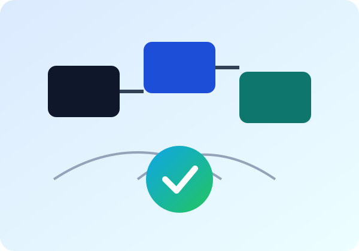

Fast Visual Check
If this page loads from your EKS endpoint, your deploy path is alive.

If this page loads from your EKS endpoint, your deploy path is alive.
Served by nginx in a tiny container image for quick build and rollout.Ich bin sehr nett!
Change directly in browser. Mama mia!
Click the button to prove JavaScript is running in the deployed app.